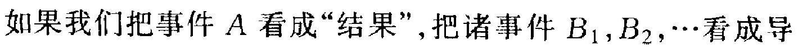

1.3 事件的运算、条件概率与独立性⚓︎
1.3 事件的运算、条件概率与独立性⚓︎
在实用上和理论上,下述情况常见: 问题中有许多比较简单的 事件, 其概率易于算出或是有了理论上的假定值,或是根据以往的 经验已对其值作了充分精确的估计. 而我们感兴趣的是一个复杂 的事件 \(E\), 它通过种种关系与上述简单事件联系起来.这时我们 想设法利用这种联系，以便利用这些简单事件的概率去算出 \(E\) 的 概率. 正如在微积分中, 直接利用定义可算出若干简单函数的导 数,但利用导数所满足的法则, 可据此算出很复杂的函数的导数.
例如,向一架飞机射击，事件 \(E\) 是“击落这架飞机”. 设这架飞 机有一名驾驶员, 两个发动机 \(G_{1}\) 和 \(G_{2}\). 又假定当击中驾驶员, 或 同时击中两个发动机时, 飞机才被击落,记事件
则 \(E\) 与 \(E_{0}, E_{1}, E_{2}\) 有关, 确切地说, \(E\) 即由 \(E_{0}, E_{1}, E_{2}\) 决定. 其关 系可通过文字表达如下:
这种表述很累赘,我们希望通过一些符号来表达,这就是本节要讨 论的事件的关系和运算. 对事件进行运算, 如同对数字作运算一 样: 对数字进行运算得出新的数, 而对事件作运算则得出新的事 件。
0.1. 1 事件的蕴含、包含及相等⚓︎
在同一试验下的两事件 \(A\) 和 \(B\),如果当 \(A\) 发生时 \(B\) 必发生, 则称 \(A\) 蕴含 \(B\), 或者说 \(B\) 包含 \(A\), 记为 \(A \subset B\). 若 \(A, B\) 互相蕴含, 即 \(A \subset B\) 且 \(B \subset A\), 则称 \(A, B\) 两事件相等,记为 \(A=B\).
例如,搓两粒骰子。记
若事件 \(A\) 发生,易见 \(B\) 非发生不可, 故 \(A\) 蕴含 \(B\). 一个形象的看 法如图 1.3. 向一个方形靶面射击, 以 \(A, B\) 分别记“命中图中所标出的闭曲线 内部”的事件,则命中 \(A\) 自意味着命中 \(B\). 这个图形也说明了“ \(B\) 包含 \(A\) ”这个 说法的来由. 因从图中明白看出, \(B\) 这 一块包含了 \(A\) 这一块.
拿“事件是试验的一些结果” (见 1.1.2 段) 这个观点去看, 如果 \(A\) 蕴含 \(B\), 那只能是: \(A\) 中的试验结果必在 \(B\) 中,即 \(B\) 这个集合 (作为试验结果的集
图 1.3 合)要大一些, “包含”一词即由此而来. 实际含义是: 若 \(A \subset B\) (也 写为 \(B \supset A\) ), 则 \(A\) 和 \(B\) 相比, 更难发生一些, 因而其概率就必然 小于或至多等于 \(B\) 的概率. “两事件 \(A, B\) 相等” 无非是说, \(A, B\) 由完全同一的一些试验结果构成, 它不过是同一件事表面上看来 不同的两个说法而已.
例如,掷两个骰子,以 \(A\) 记事件 “两骰子郑出点数奇偶不同”, \(B\) 记事件 “拼出点数之和为奇数”. 这两个事件, 说法不同, 其实则 一. 对复杂情况则不必如此一目了然. 证明两事件 \(A, B\) 相等的一 般方法是: 先设事件 \(A\) 发生, 由此推出 \(B\) 发生, 再反过来, 由假定 \(B\) 发生推出 \(A\) 发生. 这将在后面举例说明.
1. 3 .2 事件的互斥和对立⚓︎
若两事件 \(A, B\) 不能在同一次试验中都发生(但可以都不发 生), 则称它们是互斥的. 如果一些事件中任意两个都互斥, 则称这 些事件是两两互斥的,或简称互斥的.
例如，考虑投掷一个骰子这个试验. 记 \(E_{i}\) 为事件 “郑出的点数 为 \(i\) 的倍数”, \(i=2,3,4\), 则 \(E_{3}\) 与 \(E_{4}\) 为互斥. 因若 \(E_{4}\) 发生, 则只 有郑出 4 点, 而它非 3 的倍数, 即 \(E_{3}\) 必不发生. 但是, \(E_{2}\) 和 \(E_{3}\) 并 非互斥. 因若抙出 6 点, 则二者同时发生. 简言之, 互斥事件即不两 立之事件.从“事件是由一些试验结果所构成的”这个观点看, 互斥 事件无非是说:构成这两个事件各自的试验结果中不能有公共的.
互斥事件的一个重要情况是“对立事件”, 若 \(A\) 为一事件, 则 事件
称为 \(A\) 的对立事件,多记为 \(\bar{A}\) (读作 \(A b a r\), 也记为 \(A^{c}\) ).
例娊，投拼一个骰子, 事件 \(A=\{\) 掷出奇数点 \(\}=\{1,3,5\}\) 的对 立事件是 \(B=\{\) 掷出偶数点 \(\}=\{2,4,6\}\). 对立事件也常称为“补事 件”. 拿上例来说,事件 \(A\) 包含了三个试验结果: 1,3 和 5 , 而对立 事件 \(B\) 中所含的三个试验结果 2,4 和 6 , 正好补足了前面三个, 以 得到全部试验结果.
2. 3 .3 事件的和(或称并)⚓︎
设有两事件 \(A, B\), 定义一个新事件 \(C\) 如下:
所谓定义一个事件, 就是指出它何时发生, 何时不发生. 现在这个 事件 \(C\) 在何时发生呢? 只要 \(A\) 发生, 或者 \(B\) 发生(或二者同时发 生也可以), 就算是 \(C\) 发生了, 不然 (即 \(A, B\) 都不发生) 则算作 \(C\) 不发生, 这样定义的事件 \(C\) 称为事件 \(A\) 与事件 \(B\) 的和,记为
例如，郑一个骰子, 以 \(A\) 记事件 \(\{\) 郑出偶数点 \(\}=\{2,4,6\}, B\) 记事件 \(\{\) 瓶出 3 的倍数 \(\}=\{3,6\}\), 则 \(C\) \(=A+B=\{2,3,4,6\}\), 即当郑出的点为 \(2,3,4\) 或 6 时,事件 \(C\) 发生,而郑出 1,5 时则不发生. 我们注意到, 两事件的和, 即把构成各事件的那些试验结果并“在 一起所构成的事件. 如把图 1.4 的正方 形视为一个平面靶, \(A, B\) 两事件分别表 示命中图中所指闭曲线内部, 则 \(C=\) \(A+B\) 表示“命中由 \(A, B\) 两闭曲线的外
图 1.4 缘所围成的区域”。这区域比 \(A, B\) 都 大, 它由 \(A, B\) 两部分合并而成. 当然, 作为集合, 重复的部分 (图 中斜线标出的部分) 只须计入一次.
这样, 若 \(C=A+B\), 则 \(A, B\) 都蕴含 \(C, C\) 包含 \(A\) 也包含 \(B\). 经过相加, 事件变“大”了(含有更多的试验结果), 因而更容易发生 了.
事件的和很自然地推广到多个事件的情形.设有若干个事件 \(A_{1}, A_{2}, \cdots, A_{n}\). 它们的和 \(A\), 定义为事件
且记为 \(A_{1}+A_{2}+\cdots+A_{n}\) 或 \(\sum_{i=1}^{n} A_{i}\) (也常记为 \(\bigcup_{i=1}^{n} A_{i}\), 本书不用这 个记号). \(A\) 是由把 \(A_{1}, \cdots, A_{n}\) 所包含的全部试验结果并在一起所 得. 和的定义显然地推广到无限个事件的情形.
在此要不厌其烦地重复一点. 有的初学者对事件的运算感到 不易理解. 比如, 定义事件 \(A, B\) 之和为 \(C=\{A, B\) 至少发生其 一 . 他们问 : 既然已说 \(A, B\) 至少要发生一个,那岂不是对 \(A, B\)
- 由于这个原因,事件的和也常称为事件的并,和 \(A+B\) 也常被记为 \(A \cup B\). “U” 这个记号有“合并”的含义, 由于称呼和书写上的少便, 本书中我们一直用“和”与 “+” 的说法, 也有些著作在当 \(A, B\) 互斥时才把 \(A \cup B\) 写成 \(A+B\), 本书不采用这个做法. 作了限制? 不然, 我们不要忘记 1.1 节中所说的“事件不是指已发 生了的情况,而是某种情况的陈述”. 定义 \(C\) 为“ \(A, B\) 至少发生其 一”, 当然不是说 \(A, B\) 已经或必然发生一个, 而是在试验时, 若 \(A, B\) 至少发生了一个, 则算作 \(C\) 发生了. 在任一次特定的试验 中, 当然可能 \(A, B\) 都不发生, 这时 \(C\) 也就不发生. 理解了这一点 就好办, 望读者多加留意.
2.1. 4 概率的加法定理⚓︎
定理 3.1 若干个互斥事件之和的概率, 等于各事件的概率 之和:
事件个数可以是有限的或无限的, 这定理就称为 (概率的) 加法定 理,其重要条件是各事件必须为两两互斥.
在概率的古典定义和统计定义之下, (3.1)很容易证明. 拿古 典定义来说, 设试验一共有 \(N\) 个等可能的结果, 而有利于事件 \(A_{1}, A_{2}, \cdots\) 发生的结果数分别为 \(M_{1}, M_{2}, \cdots\), 则由于互斥性, 有利 于事件 \(A=A_{1}+A_{2}+\cdots\) 发生的结果数, 应为 \(M=M_{1}+M_{2}+\cdots\). 于是
对统计定义也完全类似地处理.
在概率论书籍中, 加法定理往往被称为加法公理, 即 (3.1) 是 不加证明而被接受的事实. 这条公理就是我们在 1.1.5 段中提到 而末加说明的,柯氏公理体系中的第 3 条.
读者可能会问: 既然在古典定义、统计定义这样在实用上重要 的概率定义之下, (3.1) 是可以证明的, 那么为什么要把它看作一 条公理? 问题在于: 你可以想像而且也确实可以建立一种概率理 论, 其中 (3.1) 不成立. 柯氏公理的意思是说: 我只考虑那种满足 (3.1) 的概率理论, 而不及其他. 正如在几何学中, 你可以把 “过不 在直线 \(l\) 上的任一点只有一条与 \(l\) 平行的直线" 作为公理, 由之建 立一套欧氏几何学, 也可以废弃这条公理而建立非欧几何学, 二者 都符合形式逻辑. 古典和统计定义之适合 (3.1), 不过是说明了: 它 们是柯氏公理体系中的东西.
加法定理 (3.1) 的一个重要推论如下:
系 3.1 以 \(\bar{A}\) 表 \(A\) 的对立事件,则
证明很容易. 以 \(\Omega\) 记必然事件, 则按对立事件的定义有 \(A+\) \(\bar{A}=\Omega\) 且 \(A\) 和 \(\bar{A}\) 互斥. 因 \(P(\Omega)=1\). 用 (3.1) 得 \(1=P(\Omega)=P(A\) \(+\bar{A})=P(A)+P(\bar{A})\), 即 \((3.2)\).
这个简单公式在概率计算上有用. 因为, 有时计算 \(P(A)\) 不 易, 而 \(P(\bar{A})\) 则易处理些.
2.2. 5 事件的积 (或称交)、事件的差⚓︎
设有两事件 \(A, B\), 则如下定义的事件 \(C\)
称为两事件 \(A, B\) 之积或乘积,并记为 \(A B\). 拿图 1.4 的例子来说, 若分别以 \(A, B\) 表示 “命中图中相应区域”的事件,则 \(A B\) 就是事 件“命中图中斜线部分”. 又如骰子试验, 分别以 \(A, B\) 记“撺出偶 数点”和“掷出素数点”之事件,则 \(A B\) 就是事件 “掷出 2 点”.一般, 事件 \(A, B\) 各是一些试验结果的集合,而 \(A B\) 则由同属于这两个 集合的那些试验结果组成,即这两个集合的交叉 *按积的定义,两 个事件 \(A, B\) 互斥,等于说 \(A B\) 是不可能事件.
多个事件 \(A_{1}, A_{2}, \cdots\) (有限或无限个都可以) 的积的定义类 似: \(A=\left\{A_{1}, A_{2}, \cdots\right.\) 都发生 \(\}\), 记为 \(A=A_{1} A_{2} \cdots\),或 \(\prod_{i=1}^{n} A_{i}\) (事件 个数有限) 或 \(\prod_{i=1}^{\infty} A_{i}\) (事件个数无限).
- 由于这个原因,事件的积也常称为事件的交, 积 \(A B\) 也常记为 \(A \cap B\). “ “”这个 记号有取交的含义. 为书写方便, 本书一直用 \(A B\) 这个记号. 两个事件 \(A, B\) 之差,记为 \(A-B\), 定义为
例如,则才提到的郑骰子试验中的两个事件 \(A\) 和 \(B, A-B=\{4\), 6). 在图 1.4 中, \(A-B\) 就是 “命中图中用点标出的区域” 这个事 件.一般地, \(A-B\) 就是从构成 \(A\) 的那些试验结果中, 去掉在 \(B\) 内 的那一些。很明显
其中 \(\bar{B}\) 是 \(B\) 的对立事件. 因为, \(A \bar{B}\) 无非是说, \(A, \bar{B}\) 都发生, 即 \(A\) 发生 \(B\) 不发生. 这样, 差可以通过积去定义.
我们对事件引进了和差积等运算,借用了算术中的名词. 但应 注意,算术的法则不一定能用于事件运算. 有些规则是成立的,例 如, 和 \(A+B\) 及积 \(A B\) 与次序无关: \(A+B=B+A, A B=B A\), 这 由定义直接看出. 乘法结合律也成立: \((A B) C=A(B C)\) (它们都 等于 \(A B C)\). 分配律也对, 例如:
证明如下: 设在左边的事件发生, 则按积的定义, 事件 \(A\) 和 \(B-C\) 都发生. 按差的定义, \(B\) 发生, \(C\) 不发生. 因此, \(A, B\) 同时发生而 \(A, C\) 不同时发生, 故 \(A B\) 发生而 \(A C\) 不发生. 按差的定义, 即知 \(A B-A C\) 发生. 反过来, 若右边的事件发生, 则 \(A B\) 发生而 \(A C\) 不 发生. 由前者知 \(A, B\) 都发生, 由 \(A\) 发生及 \(A C\) 不发生, 知 \(C\) 不发 生, 故 \(B-C\) 发生. 因 \(A\) 和 \(B-C\) 都发生知 \(A(B-C)\) 发生, 这证 明了 \((3.4)\).
这就是我们在本节 1.3.1 段末尾处指出的证明事件相等的一 般方法之一实例. 读者必须了解, 像 (3.3),(3.4)这类的等式, 不过 是反映了一种逻辑关系，因而必须用上述逻辑思维的方式去验证. 有些关系, 看来不习惯, 但逻辑上很简单. 例如, \(A+A=A\) 而非 \(2 A\) (2A 无意义) \(A A=A\) 而非 \(A^{2}\) ( \(A^{2}\) 无意义), 由 \(A-B=\varnothing(\) 不 可能事件), 推不出 \(A=B\), 而只能推出 \(A \subset B\). 又如, \((A-B)+B\) 并不是 \(A\) 而是 \(A+B\) (请读者自证), 等等.
3. 3 .6 条件概率⚓︎
一般讲,条件概率就是在附加一定的条件之下所计算的概率. 从广义的意义上说, 任何概率都是条件概率, 因为, 我们是在一定 的试验之下去考虑事件的概率的, 而试验即规定有条件. 在概率论 中, 规定试验的那些基础条件被看作是已定不变的.如果不再加入 其他条件或假定, 则算出的概率就叫做“无条件概率”, 就是通常所 说的概率. 当说到“条件概率”时, 总是指另外附加的条件, 其形式 可归峙为“已知某事件发生了”。
例如,考虑掷一个骰子的实验. 这里,骰子必须为均匀的正立 方体,抛郑要有足够的高度等要求, 是这试验的固有规定, 不作为 附加条件. 考虑三个事件: \(A:\) “掷出素数点”, \(B\) : “拼出奇数点”, \(C\) : “掷出偶数点”, 有
于是算出 \(A\) 的 (无条件) 概率为 \(3 / 6=1 / 2\). 现若附加上“已知 \(B\) 发 生”, 则可能情况只有三种: \(1,3,5\), 其中两种有利于 \(A\) 发生, 故在 这条件下, \(A\) 的条件概率, 记为 \(P(A \mid B)\), 等于 \(2 / 3\). 同样, 在给定 事件 \(C\) 发生的条件下, \(A\) 的条件概率为 \(P(A \mid C)=1 / 3\).
让我们在古典概率的模式下来分析一般的情况. 设一试验有 \(N\) 个等可能结果, 事件 \(A, B\) 分别包含其 \(M_{1}\) 和 \(M_{2}\) 个结果, 它们 有 \(M_{12}\) 个是公共的,这就是事件 \(A B\) 所包含的试验结果数. 若已给 \(B\) 发生, 则我们的考虑由起先的 \(N\) 个可能结果局限到现在的 \(M_{2}\) 个, 其中只有 \(M_{12}\) 个试验结果使事件 \(A\) 发生, 故一个合理的条件 概率定义, 应把 \(P(A \mid B)\) 取为 \(M_{12} / M_{2}\). 但
由此得出如下的一般定义:
定义 3.1 设有两事件 \(A, B\) 而 \(P(B) \neq 0\). 则“在给定 \(B\) 发生 的条件下 \(A\) 的条件概率”, 记为 \(P(A \mid B)\), 定义为
当 \(P(B)=0\) 时, (3.6) 无意义. 在高等概率论中, 也要考虑 \(P(A \mid B)\) 当 \(P(B)=0\) 时的定义问题, 那要夷涉到高深的数学, 超 出本书范围之外. 在后面我们也会和个别这种情况打交道,那可以 用极限的方法去处理.
(3.6) 是条件概率的一般定义, 但在计算条件概率时,并不一 定要有它. 有时, 直接从加人条件后改变了的情况去算, 更为方便. 举…个例子。
例 3.1 郑三个均勺骰子. 已知第一粒骰子掷出么点 (事件 \(B)\). 问:“掷出点数之和不小于 10 ”这个事件 \(A\) 的条件概率是多 少?
既然第一粒骰子已坐定了 1 , 则在这一条件下, 为使事件 \(A\) 发生,第二、三粒骰子郑出点数之和不能小于9.这一情况有 10 种, 即 \(36,63,45,54,46,64,55,56,65,66\). 这里 “36” 表示第二、三 粒骰子分别掷出 3 和 6 , 余类推, 这样, 得出 \(P(A \mid B)=10 / 36=5\) / 18.
此题若直接用公式 (3.6) 计算, 则比上述解法复杂些, 读者可 一试以证明结果一致.
3.1. 7 事件的独立性,概率乘法定理⚓︎
设有两事件 \(A, B \cdot A\) 的无条件概率 \(P(A)\) 与其在给定 \(B\) 发生 之下的条件概率 \(P(A \mid B)\), 一般是有差异的. 这反映了这两事件 之间存在着一些关联. 例如, 若 \(P(A \mid B)>P(A)\), 则 \(B\) 的发生使 \(A\) 发生的可能性增大了: \(B\) 促进了 \(A\) 的发生.
反之, 若 \(P(A)=P(A \mid B)\), 则 \(B\) 的发生与否对 \(A\) 发生的可 能性毫无影响 * . 这时在概率论上就称 \(A, B\) 两事件独立, 而由 (3.6)得出
*这样说应补充: 由 \(P(A)=P(A \mid B)\) 推出 \(P(A)=P(A \mid \bar{B}), \bar{B}\) 为 \(B\) 的对立事件. 事实上, 由 \(P(A)=P(A \mid B)\) 及 (3.6) 知 \(P(A B)=P(A) P(B)\). 因为 \(A=A B+A \bar{B}\) 且 \(A B, A \bar{B}\) 互斥, 知 \(P(A \bar{B})=P(A)-P(A B)=P(A)-P(A) P(B)=P(A)(1-P(B))\) \(=P(A) P(\bar{B})\). 故 \(P(A \mid \bar{B})=P(A \bar{B}) / P(\bar{B})=P(A)\).
拿此式来刻画独立性, 比用 \(P(A)=P(A \mid B)\) 更好, 因 (3.7)不受 \(P(B)\) 是否为 0 的制约 (当 \(P(B)\) 为 0 时 (3.7) 必成立). 因此, 我们 取如下的定义:
定义 3.2 两事件 \(A, B\) 若满足 (3.7), 则称 \(A, B\) 独立.
定理 3.2 两独立事件 \(A, B\) 的积 \(A B\) 之概率 \(P(A B)\) 等于其 各自概率之积 \(P(A) P(B)\).
这个定理就是 (3.7) 式, 它称为 “概率的乘法定理”. 其实, 它就 是独立性的定义, 我们之所以又将它重复列出并标为一个定理, 就 是因为这个事实极其重要.
在实际问题中,我们并不常用 (3.7) 式去判断两事件 \(A, B\) 是 否独立，而是相反: 从事件的实际角度去分析判断其不应有关联因 而是独立的,然后就可以用 (3.7). 例如,两个工人分别在两台机床 上进行生产, 彼此各不相干, 则各自是否生产出废品或多少废品这 类事件应是独立的.一城市中两个相距较远的地段是否出交通事 故,一个人的收人与其姓氏笔划, 这类事凭常识推想,认定为独立 的.
由此可知, 两事件有独立性多半是在下述情况之下产生的: 有 两个试验 \(E_{1}\) 和 \(E_{2}\), 其试验结果 (各有许多) 分别记之以 \(e_{1}\) 和 \(e_{2}\). 考虑一个“大”试验 \(E\), 它由 \(E_{1}, E_{2}\) 两部分构成 (故 \(E\) 常称为复合 试验), 可记为 \(E=\left(E_{1}, E_{2}\right)\), 其结果可记为 \(\left(e_{1}, e_{2}\right)\). 在试验 \(E\) 的 一个事件, 即是牵涉到 \(\left(e_{1}, e_{2}\right)\) 的某一个陈述 (见 1.1.2). 如果 \(A_{1}\), \(A_{2}\) 是两个事件, \(A_{1}\) 只牛涉 \(e_{1}\) 而 \(A_{2}\) 只牵涉 \(e_{2}\), 则当两试验结果 如果彼此不影响时, \(A_{1}, A_{2}\) 会有独立性. 可以举一个具体例子, 设 试验 \(E_{1}\) 为鄚一个均匀骰子, 其试验结果 \(e_{1}\) 有 6 个: \(1,2, \cdots, 6\). 试 验 \(E_{2}\) 为掷一个硬币, 其结果 \(e_{2}\) 有两个: “正”和“反”. 定义两事件 \(A_{1}, A_{2}\) :
这两个事件可看成同一试验 \(E\) 下的两个事件, \(E=\left\{E_{1}, E_{2}\right\}\), 它包 含 12 个可能结果：
事件 \(A_{1}\) 包含两个可能结果, 即 \(\left\{(1\right.\), 正), (1, 反) \(\}\), 而 \(A_{2}\) 则包含 6 个可能结果: \(\{(1\), 正 \(),(2\), 正 \(), \cdots,(6\),正 \()\}\), 通过这种方式,我们把 两个看来不相干的事件 \(A_{1}\) 和 \(A_{2}\) 统一在一个试验 \(E\) 之下, 而其 独立性就好理解了一一即郑骰子和郑硬币彼此不影响而已. 这种 把若干个不相干的试验统一起来的做法, 看起来好像纯粹是一种 形式,但在理论上有其方便.
如果试验的内容真是单一的, 那么, 在这种试验下两事件独立 是较少出现的例外. 因为, 两个事件既然都依赖同一-批结果, 彼此 谅必会有影响. 郑两个均匀骰子, 以 \(A_{i}\) 记 “点数和为 \(i\) 的倍数”, \(i=2,3,5\). 通过用 (3.7) 验证可知, \(A_{2}\) 与 \(A_{3}\) 独立, 但这非一般性 质, 比如, \(A_{2}\) 与 \(A_{5}\) 就不独立. 对这种“单一”性试验, (3.7) 作为验 证独立性的工具, 还是有用的. 有时, 末经周到考虑的直观也可能 引人歧途.
例 3.2 再考虑例 3.1 , 记 \(B=\{\) 至少有一个骰子掷出 1\(\}\),而 把事件 \(A\) 定义为 \(A=\{\) 三个骰子抙出的点数中至少有两个一样 (即不全相异) \(\}\), 问 \(A, B\) 是否独立?
初一看使人的倾向于相信 \(A, B\) 独立, 理由如下: 知道 \(B\) 发 生, 即知道掷出的点中有 1 , 对 \(A\) 而言, 似与知道掷出的点中有 2 (或 3,4,5,6 都可以)一样. 故 1 这个数并不相对地更有利于或更 不利于 \(A\) 发生. 经过计算发现不然: \(A, B\) 并不独立. 这一点看来 有些难理解, 但是, 如按下述分析, 则可以信服: 考虑 \(\bar{B}\). 若 \(\bar{B}\) 发 生, 则三个骰子都不出么. 这样, 它们都只有 5 种可能性 \((2,3,4,5\), 6), 比不知 \(\bar{B}\) 发生时可能取的点数 \(1,2,3,4,5,6\) 少了一个, 在 5 个 数中拿 3 个 (每个可重复拿), 其有两个一样的可能性, 自应比在 6 个数中拿 3 个时, 有两个一样的可能性要大些. 这个分析指出应有 \(P(A)<P(A \mid \widetilde{B})\), 由此推出 \(P(A)>P(A \mid B)\) (见习题 15 ), \(A, B\) 不独立.
多个事件独立性的定义,就是两个事件情况的直接推广.
定义 3.3 设 \(A_{1}, A_{2}, \cdots\) 为有限或无限个事件. 如果从其中任 意取出有限个 \(A_{i_{1}}, A_{i_{2}}, \cdots, A_{i_{m}}\) 都成立.
则称事件 \(A_{1}, A_{2}, \cdots\) 相互独立或简称独立.
这个定义与由条件概率出发的定义是等价的, 后者是说: 对任 何互不相同的 \(i_{1}, i_{2}, \cdots, i_{m}\), 有
即任意事件 \(A_{i_{1}}\) 发生的可能性大小, 不受其他事件发生的影响. 这 更接近于独立性的原义. 但是, (3.9) 的左边依赖于 \(P\left(A_{i_{2}} \cdots A_{i_{m}}\right)\) \(>0\), 否则无意义, 而 (3.8) 就没有这个问题. 另外, 定理 3.2 后面说 的那段话当然也适用于多个事件的情形: 多个事件的独立性往往 产生于由多个试验构成的复合试验中, 每个事件只与其中一个试 验有关.
由独立性定义立即得出下面的概率乘法定理：
定理 3.3 若干个独立事件 \(A_{1}, \cdots, A_{n}\) 之积的概率,等于各 事件概率的乘积:
乘法定理的作用与加法定理一样: 把复杂事件的概率的计算 归结为更简单的事件概率的计算, 这当然要有条件: 相加是互斥, 相乘是独立.
由独立性定义可得到下面两条重要推论.
系 3.2 独立事件的任一部分也独立. 例如, \(A, B, C, D\) 四事 件相互独立,则 \(A, C\), 或 \(A, B, D\) 等,都是独立的.
这一点由独立性定义直接推出. 更进一步可推广为: 由独立事 件决定的事件也独立.举例来说, 若事件 \(A_{1}, \cdots, A_{6}\) 相互独立, 则 以下三事件
也独立. 这在直观上很显然, 但证明起来很麻烦, 因为可以产生的 事件很多. 在下一章中我们将指出另外的考虑方法 (见第二章例 3.7). 如果把 \(B_{3}\) 改为 \(A_{4} A_{5} A_{6}\), 则 \(B_{2}, B_{3}\), 就不一定独立了. 理由 也很明显:二者都与 \(A_{4}\) 有关，因而彼此也就有了关系．
系 3.3 若一列事件 \(A_{1}, A_{2}, \cdots\) 相互独立, 则将其中任一部分 改为对立事件时, 所得事件列仍为相互独立.
例如, 若 \(A_{1}, A_{2}, A_{3}\) 相互独立, 则 \(\bar{A}_{1}, A_{2}, A_{3}\), 或 \(\bar{A}_{1}, A_{2}, \bar{A}_{3}\), 或 \(\bar{A}_{1}, \overline{A_{2}}, \overline{A_{3}}\) 等, 都是互相独立的.
这一点从直观上也很显然, 且对两个事件的情况, 已在 27 页 的足注中作过证明. 让我们再看一个三个事件的例子. 比如, 要证 \(\bar{A}_{1}, A_{2}, \bar{A}_{3}\) 独立, 要对其验证 (3.8), 其中有 \(P\left(\bar{A}_{1} A_{2} \bar{A}_{3}\right)=\) \(P\left(\bar{A}_{1}\right) P\left(A_{2}\right) P\left(\bar{A}_{3}\right)\). 为此注意
且右边两事件互斥, 故
再利用 \(A_{1} A_{2}=A_{1} A_{2} A_{3}+A_{1} A_{2} \bar{A}_{3}\), 得
以此代人(3.12), 得
明所欲证. 可以看出: 当涉及众多的事件时, 这么处理会很冗长, 但 并无任何实质困难 (可使用数学归纳法, 对所含对立事件个数进行 归纳).
除了相互独立之外, 还有所谓“两两独立” 的概念. 一些事件 \(A_{1}, A_{2}, \cdots\), 如果其中任意两个都独立, 则称它们两两独立. 由相互 独立必推出两两独立, 反过来不一定对. 从数学上, 这无非是说: 由 (3.8) 对 \(m=2\) 及任何 \(i_{1} \neq i_{2}\) 成立, 不必能推出该式当 \(m>2\) 时 也成立.下面是一个简单的例子:
例 3.3 有四个大小质地一样的球, 分别在其上写上数字 1, 2,3 和 “ \(1,2,3\) ”, 即第 4 个球上 \(1,2,3\) 这三个数字都有. 引进三个 事件:
所谓随机抽出一球, 即每球被抽出的概率都是 \(1 / 4\). 易见 \(P\left(A_{1}\right)=\) \(P\left(A_{2}\right)=P\left(A_{3}\right)=1 / 2\). 因为, 为使事件 \(A_{1}\) 发生, 必须抽出第一球 或第四球, 有 2 种可能. 又 \(P\left(A_{1} A_{2}\right)=P\left(A_{1} A_{3}\right)=P\left(A_{2} A_{3}\right)=\) \(1 / 4\). 因为, 要 \(A_{1}, A_{2}\) 同时发生 (抽出的球上既有 1 又有 2 ), 必须 抽出第四球. 这样, 对任一对事件 \(A_{i}, A_{j}\), 都有 \(1 / 4=P\left(A_{i} A_{j}\right)=\) \(P\left(A_{i}\right) P\left(A_{j}\right)\), 而 \(A_{1}, A_{2}, A_{3}\) 为两两独立.
但 \(A_{1}, A_{2}, A_{3}\) 不是相互独立. 因为, 易见 \(P\left(A_{1} A_{2} A_{3}\right)\) 也是 \(1 / 4\), 而 \(P\left(A_{1}\right) P\left(A_{2}\right) P\left(A_{3}\right)\) 为 \(1 / 8\), 二者不相等.
在现实生活中,难于想像两两独立而不相互独立的情况. 可以 这样想: 独立性毕竟是一个数学概念, 是现实世界中通常理解的那 种“独立性”的一种数学抽象, 它难免会有些不尽人意的地方.
独立性的概念在概率论中极端重要. 较早期 (比方说,到上世 纪 30 年代止)的概率论发展中, 它占据了中心地位. 时至今日, 有 不少非独立的理论发展了起来, 但其完善的程度仍不够. 而且, 独 立性的理论和方法也是研究非独立模型的基础和工具. 在实用上, 确有许多事件其相依性很小, 在误差容许的范围内, 它们可视为独 立的,而方便于问题的解决.
利用本节中引进的事件运算,独立性概念,加法乘法定理,可 计算一些较复杂事件的概率. 举几个例子.
例 3.4 考虑本节开始处提到的那个“打飞机”的例子. 按所 作规定, “飞机被击落”这事件 \(E\) 可表为
设 \(E_{0}, E_{1}, E_{2}\) 三事件独立. 这假定从实际角度看还算合理. 记 \(E_{0}\), \(E_{1}, E_{2}\) 的概率分别为 \(p_{0}, p_{1}, p_{2}\). 为算 \(E\) 的概率 \(P(E)\), 不能直接 用加法定理, 因 \(E_{0}\) 与 \(E_{1} E_{2}\) 并非互斥, 考虑 \(\bar{E}\), 易见 \(\bar{E}=\bar{E}_{0} \overline{E_{1} E_{2}}\). 因 \(E_{0}, E_{1}, E_{2}\) 独立, 按系 3.2 后面指出的, \(\bar{E}_{0}\) 和 \(\overline{E_{1} E_{2}}\) 独立, 故
有 \(P\left(\bar{E}_{0}\right)=1-P\left(E_{0}\right)=1-p_{0}, P\left(\overline{E_{1} E_{2}}\right)=1-P\left(E_{1} E_{2}\right)=1-\) \(P\left(E_{1}\right) P\left(E_{2}\right)=1-p_{1} p_{2}\). 代人上式得 \(P(\bar{E})=\left(1-p_{0}\right)(1-\) \(\left.p_{1} p_{2}\right)\), 而
例 3.5 甲、乙二人下象棋, 每局甲胜的概率为 \(a\), 乙胜的概 率为 \(b\), 为简化问题, 设没有和局的情况,这意味着 \(a+b=1\).
设想甲的棋艺高于乙, 即 \(a>b\). 考虑到这一点, 他们商定最终 胜负的规则如下: 到什么时候为止甲连胜了三局而在此之前乙从 末连胜二局, 则甲胜. 反之, 若到什么时候为止乙连胜了二局而在 此之前甲从末连胜三局, 则乙胜. 现要求 “甲最终取胜”这事件 \(A\) 的概率 \(P(A)\), 及“乙最终取胜”这事件 \(B\) 的概率 \(P(B)\).
为方便计, 分别以 \(E\) 和 \(F\) 表甲、乙在特定的一局取胜的事件, 有 \(P(E)=a, P(F)=b\), 现考虑“甲取胜”的事件 \(A\), 分两种情况.
- 第一局甲胜而最终甲胜了.
这一情况又可分解为许多子情况: 对 \(n=0,1,2 \cdots\), 甲经过 \(n\) 个“阶段” 后才取胜, 每个阶段是 \(E F\) 或 \(E E F\), 然后接着来一个 \(E E E\). 例如, 甲经过 4 个阶段后获胜的一种可能实战结果为
4. EEF EF EEF EEE⚓︎
即共下了 11 局甲才获胜, 其中第 \(1,2,4,6,7,9,10,11\) 局甲胜, 其 余乙胜.
每个阶段不是 \(E F\) 就是 \(E E F\), 这两种情况互斥, 又由独立性, 知每个阶段概率为 \(a b+a a b=a b(1+a)\). 再由独立性, 知“经 \(n\) 阶 段后甲获胜”的概率, 为 \([a b(1+a)]^{n} a^{3} \cdot n\) 可以为 \(0,1,2, \cdots\), 不同 的 \(n\) 互斥. 于是这部分概率总和为
- 第一局乙胜而最终甲胜了.
既然第一局为 \(F\) 而最终甲胜, 第二局必须是 \(E\), 故从第二局 作起点看. 我们回到了情况 1 , 从而这部分的概率为 \(b p\) (请读者注 意, 这里事实上已用了概率的乘法定理: \(P\) (第一局乙胜且最终甲 胜) \(=P\) (第一局乙胜) \(P\) (第二同甲胜且最终甲胜), 第一项为 \(b\) 而 后一项为 \(p\). 总合两个情况 (它们互斥), 用加法定理, 得
直观上我们觉得, 这个竟赛无限期拖下去分不出胜负是不可 能的, 这意味着 \(P(B)=1-P(A)\). 可是, 上述直观看法仍须证明, 不如直接算. 方法与算 \(P(A)\) 一样, 但须分三种情况: (1) 第一局乙 胜. (2)第一局甲胜, 第二局乙胜. (3)前两局甲胜, 我们把具体计算留 给读者 (习题 16) , 结果为
由于 \(a+b=1\), 极易验证 \(P(A)+P(B)=1\).
这个例子值得细心品味. 第一, 它提供了一个涉及到无限个事 件的情况 (在甲最终取胜前可以经过任意多的“阶段”)，以及在无 穷个事件时使用加法定理 (3.1). 第二, 本例告诉我们, 在面对一个 复杂事件时, 主要的方法是冷静地分析以设法把它分拆成一些互 斥的简单情况. 这里, 必须细心确保互斥性又无遗漏, 一着不慎, 满 盘皆非.
例 3.6 设一个居民区有 \(n\) 个人, 设有一个邮局, 开 \(c\) 个窗 口, 设每个窗口都办理所有业务. \(c\) 太小, 经常排长队; \(c\) 太大又不 经济.
现设在每一指定时刻, 这 \(n\) 个人中每一个是否在邮局是独立 的, 每人在邮局的概率都是 \(p\). 设计要求: “在每一时刻每窗口排队 人数 (包括正在被服务的那个人) 不超过 \(m\) ”这个事件的概率, 要 不小于 \(a\) (例如, \(a=0.80,0.90\) 或 0.95\()\). 问至少须设多少窗口?
把 \(n\) 个人编号为 \(1, \cdots, n\), 记事件 \(E_{i}=\{\) 在指定时刻第 \(i\) 个人在邮局办事 \(\}, i=1, \cdots, n\) 则在指 定时刻,邮局的具体情况可以用形如
这种事件去描述之. 为了每个窗口排队人数都不超过 \(m\), 在上述 序列中, 不加“bar”的 \(E\) 的个数, 至多只能是 \(\mathrm{cm}\). 现固定一个 \(k \leqslant\) \(\mathrm{cm}\), 来求 “在 (3.15) 中恰有 \(k\) 个不加 bar 的 \(E\) ” 这事件 \(B_{k}\) 的概率. 由独立性以及 \(P\left(E_{i}\right)=p, P\left(\bar{E}_{i}\right)=1-p\), 知每个像 (3.15) 那样的 序列且不加 bar 的 \(E\) 恰有 \(k\) 个时, 概率为 \(p^{k}(1-p)^{n-k}\). 但 \(k\) 个不 加 bar 的位置, 可以是 \(n\) 个位置中的任何 \(k\) 个. 因此, 一共有 \(\left(\begin{array}{l}n \\ k\end{array}\right)\) 个形如(3.15)的序列, 其中不加 bar 的 \(E\) 恰有 \(k\) 个, 这样得 到 \(P\left(B_{k}\right)=\left(\begin{array}{l}n \\ k\end{array}\right) p^{k}(1-p)^{n-k}\). 由于 \(k\) 可以为 \(0,1, \cdots, c m\), 且不同 的 \(k\) 对应的 \(B_{k}\) 互斥, 故得
\(P(\) 每个窗口排队人数不超过 \(m)=\sum_{k=0}^{c m}\left(\begin{array}{l}n \\ k\end{array}\right) p^{k}(1-p)^{n-k}\)
找一个最小的自然数 \(c\), 使上式不小于指定的 \(a\), 就是问题的答 案.
这是一个有现实意义的例题. 在 \(n\) 较大时, 可用更方便的近 似方法确定 \(c\), 参见第三章例 4.1. 当然, 实际问题比本例描述的要 复杂得多, 因为有一个每人服务时间长短的问题. 这时间长短并非 固定而是随机的. 这类问题属于排队论, 是运筹学的一个分支. 本 例是运筹学与概率论有联系的一个例子.
4.1. 8 全概率公式与贝叶斯公式⚓︎
全概率公式
设 \(B_{1}, B_{2}, \cdots\) 为有限或无限个事件, 它们两两互斥且在每次 试验中至少发生一个.用式表之,即
有时把具有这些性质的一组事件称为一个“完备事件群”, 注意, 任 一事件 \(B\) 及其对立事件组成一个完备事件群.
现考虑任一事件 \(A\). 因 \(\Omega\) 为必然事件, 有 \(A=A \Omega=A B_{1}+\) \(A B_{2}+\cdots\). 因 \(B_{1}, B_{2}, \cdots\) 两两互斥, 显然 \(A B_{1}, A B_{2}, \cdots\) 也两两互斥. 故依加法定理 3.1 , 有
再由条件概率的定义, 有 \(P\left(A B_{i}\right)=P\left(B_{i}\right) P\left(A \mid B_{i}\right)\). 代入上式得
公式 (3.18) 就称为 “全概率公式”. 这名称的来由, 从公式(3.17) 和 (3.18) 可以悟出: “全部”概率 \(P(A)\) 被分解成了许多部分之和. 它 的理论和实用意义在于: 在较复杂的情况下直接算 \(P(A)\) 不易, 但 \(A\) 总是随某个 \(B_{i}\) 伴出, 适当去构造这一组 \(B_{i}\) 往往可以简化计算. 这种思想应用的一个实例是例 3.5 中算 “乙最终获胜” 这事件 \(A\) 的概率.我们在该例中已指出: \(A\) 必伴随以下三种互斥情况之一 而发生:乙; 甲乙; 甲甲. 只是该例的特殊性使我们可只用加法定理 而不必求助于全概率公式.
这公式还可以从另一个角度去理解. 把 \(B_{i}\) 看作为导致事件 \(A\) 发生的一种可能途径. 对不同途径, \(A\) 发生的概率即条件概率 \(P(A \mid B)\) 各各不同, 而采取哪个途径却是随机的. 直观上易理解: 在这种机制下, \(A\) 的综合概率 \(P(A)\) 应在最小的 \(P\left(A \mid B_{i}\right)\) 和最大 的 \(P\left(A \mid B_{i}\right)\) 之间, 它也不一定是所有 \(P(A \mid B)\) 的算术平均, 因为 各途径被使用的机会 \(P\left(B_{i}\right)\) 各各不同, 正确的答案如所预期, 应 是诸 \(P\left(A \mid B_{i}\right), i=1,2, \cdots\), 以 \(P\left(B_{i}\right), i=1,2, \cdots\) 为权的加权平均 值. 一个形象的例子如下: 某中学有若干个毕业班, 各班升学率不 同. 其总升学率, 是各班升学率的加权平均, 其权与各班学生数成 比例. 又如若干工厂生产同一产品, 其废品率各各不同. 若将各厂 产品汇总, 则总废品率为各厂废品率之加权平均, 其权与各厂产量 成比例. 再举一个例.
例 3.7 设一个家庭有 \(k\) 个小孩的概率为 \(p_{k}, k=0,1,2, \cdots\), 又设各小孩的性别独立. 且生男、女孩的概率各为 \(1 / 2\). 试求事件 \(A=\{\) 家庭中所有小孩为同一性别 \(\}\) 的概率.
引进事件 \(B_{k}=\{\) 家庭中有 \(k\) 个小孩 \(\}\), 则 \(B_{0}, B_{1}, \cdots\) 构成完备 事件群, \(P\left(B_{k}\right)=p_{k}\), 现考虑 \(P\left(A \mid B_{k}\right)\). 约定当 \(k=0\) 时其值为 1 . 若 \(k \geqslant 1\), 则 \(k\) 个小孩性别全同有两种可能: 全为男孩, 概率 \((1 / 2)^{k}\); 全为女孩,概率也是 \((1 / 2)^{k}\). 因
由此, 用全概率公式, 得出
贝叶斯公式
在全概率公式的假定之下, 有
这个公式就叫做贝叶斯公式, 是概率论中的一个著名的公式. 这个 公式首先出现在英国学者 T. 贝叶斯 \((1702 \sim 1761)\) 去世后的 1763 年的一项著作中.
从形式推导上看, 这个公式平淡无奇, 它不过是条件概率定义 与全概率公式的简单推论. 其所以著名, 在其现实以至哲理意义的 解释上: 先看 \(P\left(B_{1}\right), P\left(B_{2}\right), \cdots\), 它是在没有进一步的信息 (不知 事件 \(A\) 是否发生) 的情况下, 人们对诸事件 \(B_{1}, B_{2}, \cdots\) 发生可能性 大小的认识. 现在有了新的信息 (知道 \(A\) 发生), 人们对 \(B_{1}, B_{2}, \cdots\) 发生可能性大小有了新的估价. 这种情况在日常生活中也是屡见 不鲜的: 原以为不甚可能的一种情况, 可以因某种事件的发生而变 得甚为可能, 或者相反. 贝叶斯公式从数量上刻画了这种变化.
 致这结果的可能的“原因”, 则可以形象地把全概率公式看作成为 “由原因推结果”; 而贝叶斯公式则恰好相反, 其作用在于 “由结果 推原因”:现在有一个“结果” \(A\) 已发生了, 在众多可能的“原因” 中, 到底是哪一个导致了这结果? 这是一个在日常生活和科学技 术中常要问到的问题. 贝叶斯公式说, 各原因可能性大小与 \(P\left(B_{i}\right.\) (A) 成比例. 例如, 某地区发生了一起刑事案件,按平日掌握的资 料, 嫌疑人有张三、李四……等人, 在不知道案情细节 (事件 \(A\) ) 之 前, 人们对上述诸人作案的可能性有个估计 (相当于 \(P\left(B_{1}\right)\), \(\left.P\left(B_{2}\right) \cdots\right)\), 那是基于他们过去在局子里的记录. 但在知道案情细 节以后, 这个估计就有了变化, 比方说, 原来以为不甚可能的张三, 现在成了重点嫌疑人.
由以上的讨论也不难看出此公式在统计上的作用. 在统计学 中, 是依靠收集的数据 (相当于此处的事件 \(A\) ) 去寻找所感兴趣的 问题的答案. 这是一个“由结果找原因”性质的过程, 故而贝叶斯公 式有用武之地. 事实上,依据这个公式的思想发展了一整套统计推 断方法, 叫做“贝叶斯统计”. 在本书后面的章节中将论及贝叶斯统 计中的某些方法.
下述简单例子可能有助于理解上述论点.
例 3.8 有三个盒子 \(C_{1}, C_{2}, C_{3}\), 各有 100 个球, 其中 \(C_{1}\) 盒含 白球 80 个, 红球 10 个, 黑球 10 个; \(C_{2}\) 为白 10 、红 80 、黑 \(10 ; C_{3}\) 为 白 10 ,红 10 ,黑 80 . 现从这三盒中随机地抽出一个(每盒被抽的概 率为 \(1 / 3\) ), 然后从所抽出的盒中随机抽出一个球 (每球被抽的概 率为 0.01 ), 结果抽出者为白球. 问 “该白球是从 \(C_{i}\) 盒中抽出”的 可能性有多大? \(i=1,2,3\).
记 \(B_{i}=\) 抽出的为 \(C_{i}\) 盒 \(\}, i=1,2,3 ; A=\{\) 抽出白球 \(\}\), 要求 的是条件概率 \(P\left(B_{i} \mid A\right)\). 按假定有
代人(3.18), 算出
因为 \(C_{1}\) 盒所含白球最多, 故在已知抽出白球的情况下, 该球 系来自 \(C_{1}\) 盒的可能性也最大, 理所当然. 可能仍有读者不完全了 然于心, 则可以设想这么一个试验: 准备两张纸, 把例中的试验一 次又一次的做下去: 每抽出一个盒, 在左边的纸上记下其为 \(C_{1}\) 或 \(C_{2}\) 或 \(C_{3}\) (不管从该盒中抽出的球如何), 而只有在抽出的球为白 球时,才在右边纸上记下该盒为 \(C_{1}\) 或 \(C_{2} 、 C_{3}\). 在进行了极大量次 数试验后, 会发现左边纸上 \(C_{1}\) 的比例很接近 \(1 / 3\), 而在右边纸上 \(C_{1}\) 的比例则很接近 0.8 .
例 3.9 设某种病菌在人口中的带菌率为 0.03 . 当检查时, 由 于技术及操作之不完善以及种种特殊原因, 使带菌者末必检出阳 性反应而不带菌者也可能呈阳性反应.假定
\(P(\) 阳性 \(\mid\) 带菌 \()=0.99, P(\) 阳性 \(\mid\) 带菌 \()=0.01\)
\(P(\) 阳性 \(\mid\) 不带菌 \()=0.05, P(\) 阴性 \(\mid\) 不带菌 \()=0.95\)
现设某人检出阳性,问 “他带菌”的概率是多少?
此问题相当于 \(P\left(B_{1}\right)=0.03, P\left(B_{2}\right)=0.97\), 且
所求的概率为 \(P\left(B_{1} \mid A\right)\). 按公式 (3.18) 算出
就是说, 即使你检出阳性, 尚可不必过早下结论你一定带菌了, 实 际上这种可能性尚不到百分之四十。
这个例子很值得玩味, 且对其“思维定势”中无概率成分的人 来说, 简直有点难以置信. 说穿了, 理由简单之极. 由于带菌率极 低, 在全人口中绝大部分不带菌. 由于检验方法之不完善, 在这大 批人中会检出许多呈阳性者. 另一方面, 带菌者在全人口中很少, 即使全检出呈阳性, 在这两部分呈阳性者的总和中也只占相对较 小的一部分, 而大部分属于 “虚报” 性质. 这个例子说明，提高精确 度在这类检验中极为重要。
一个不慬概率的人可能会这样推理: 由于不带菌时检出阳性 的机会才 0.05 . 我现在呈阳性, 说明我有 \(1-0.05=0.95\) 的机会 带菌. 实际不然. 大而言之, 概率思维是人们正确观察事物而必备 的文化修养,这样说也许并不过分!
评论
登录github的账号后，可以直接在下方评论框中输入。
如果想进行更详细的讨论(如排版、上传图片等)，选择一个反应后并点击上方的文字，进入论坛页面。